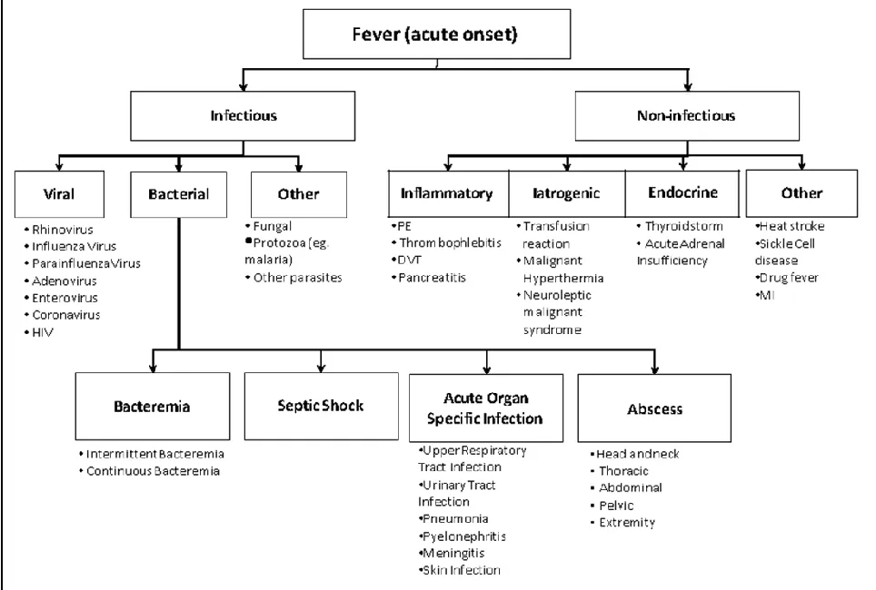
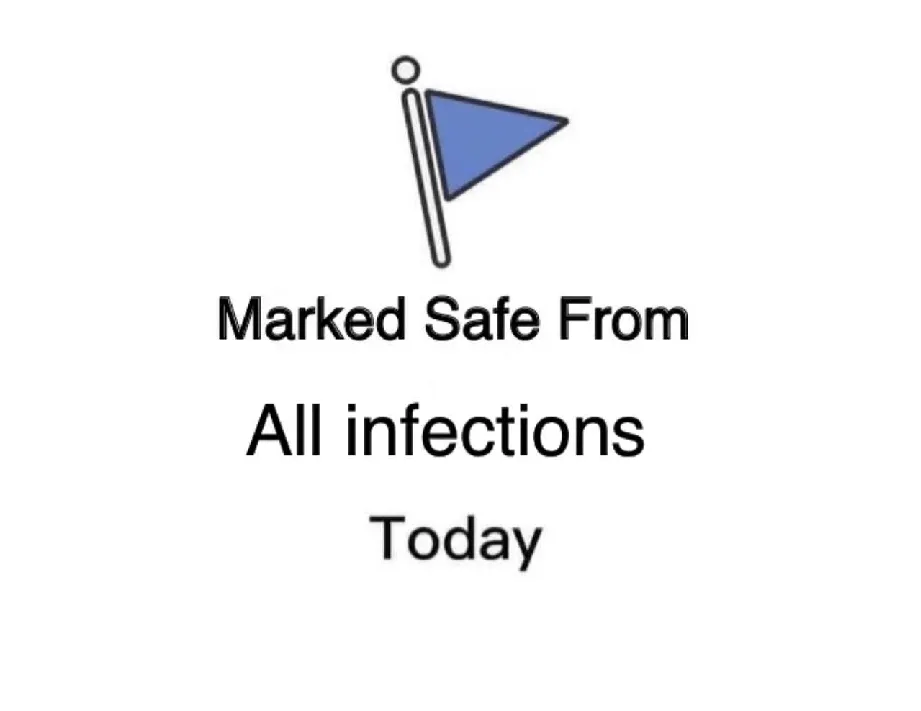
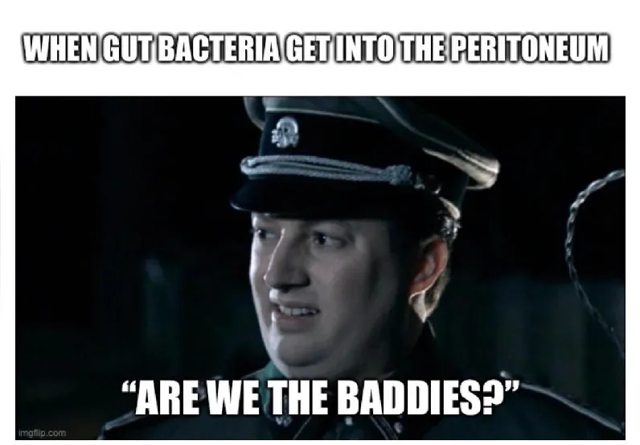
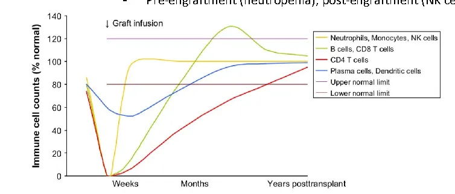

Every topic from Nicole's Notes and the Week 14 lectures. Pick a topic, open a card, then test yourself with the quick recall at the end.
| Strategy | Heat Production | Heat Loss | |
|---|---|---|---|
| Physiological | Brown adipose tissue thermogenesis (thyroid hormones) | Activated | Inhibited |
| Skin and blood flow (sympathetic/parasympathetic) | Vasoconstriction | Vasodilation | |
| Sweat glands (acetylcholine) | Inhibited | Sweating | |
| Evaporation in the lungs | Inhibited | Exhalation of warm air, panting | |
| Shivering thermogenesis (can voluntarily suppress) | Activated | Inhibited | |
| Behavioural | Postural changes | Reduce exposed surface | Increase exposed surface |
| Temperature choice | Heat-seeking | Cool-seeking | |
| Altering microenvironment | Nesting, social huddling | Air conditioning |
| Physiologic Basis of Fever | Examples |
|---|---|
| Exogenous pyrogens | Bacterial endotoxin – lipopolysaccharide (LPS) in gram-negative bacteria has Lipid A which induces fever |
| Endogenous pyrogens | Interleukins (IL-1, IL-6), tumor necrosis factor α, interferon γ à production of prostaglandins (PGE2) raises the thermostatic setpoint à hypothalamus à heat-seeking behaviour and release of noradrenaline, acetylcholine, and thyroid hormones Triggers: infection, diseases causing inflammation (gout, cancer, vasculitis), tissue injury (ischemia, trauma), cell death (necrosis) |
| Cryogens | Anti-inflammatory cytokines, hormones, neuroendocrine products Protect the host against the destructive consequences of unchecked fever – lower body temperature |
| Classification of Fever | Degree |
|---|---|
| Timing of onset | Acute (< 7 days) – viral infections, skin and soft tissue bacterial infections, UTIs, pneumonia Subacute (1-2 weeks) – intraabdominal abscess Chronic/Persistent (> 2 weeks) – TB, HIV, cancers, connective tissue diseases (SLE) |
| Temperature height | Low > 37 ° C, moderate = 38-29 ° C, high grade > 39 ° C |
| Pattern | Continuous, intermittent, remittent |
| Alarm Symptoms (URGENT) | Consider | Benign Causes |
|---|---|---|
| High fever (> 105.8 ° F) | CNS infection, NIMS, heat stroke | |
| Rash | Meningitis, bacteremia with septic shock rickettsial disease, bacterial endocarditis | Viral exanthem, drug fever |
| Change in mental status and level of sensorium | Meningitis, encephalitis, NIMS, heat stroke, bacterial infections with septic shock | |
| Dizziness/light-headedness | Bacterial infection with septic shock, adrenal insufficiency, PE | Viral infection with labyrinthitis |
| Recent chemotherapy | Nosocomial infection with neutropenia | |
| Shortness of breath and chest pain | PE, pneumonia, empyema |
| Fever | Hyperthermia |
|---|---|
| Results in generation of acute phase reactants and activation of numerous physiologic, endocrinologic, and immunologic systems | Dysregulated thermoregulation and insufficient ability to dissipate heat Lacks normal diurnal fluctuation seen with fever and normal body temperature |
| Resetting of hypothalamic thermoregulatory centre set point | Unchanged (normal) hypothalamic thermoregulatory centre set point |
| Temperature rarely exceeds 41 ° C | Temperature can exceed 41 ° C |
| Intact peripheral mechanisms for heat generation and loss | Excessive heat production and diminished heat loss |
| Responds to antipyretics | No response to antipyretics |
| Causes: infection, inflammation, trauma | Causes: drugs, exercise, heat exposure |
| Step | Considerations | |||
|---|---|---|---|---|
| Safety check | Routine: handwashing + COVID precautions (gown, gloves, face mask, eye protection) Personal protective equipment (PPE) | |||
| Is the patient stable? Vitals? Sepsis check | Airway, breathing, circulation, blood pressure, heart rate, respiratory rate, temperature, O saturation 2 Quick Sequential Organ Failure Assessment (qSOFA): high respiratory rate (≥ 22 breaths/min), low blood pressure (≤ 100/60), altered mentation – 2+ points = high risk; adults Systemic Inflammatory Response Syndrome (SIRS): temperature (< 36 ° C or > 38 ° C), high heart rate (> 90 bpm), high respiratory rate (> 20 breaths/min), white blood cell count (> 12000/mm³, < 4000/mm³, or > 10% bands) – 2+ = SIRS criteria; pediatrics | |||
| Hx | Pediatrics – rectum, armpit 38 ° C | Adults – oral/tympanic 37.2 ° C (6 AM) or 37.8 ° C | Older Adults – oral/tympanic | |
| 37.8 ° C (single) or 37.2 ° C (persistent) | ||||
| Rise of ≥ 1.1 ° C above baseline | ||||
| HPI ROS Prenatal Hx -TORCH: toxoplasma gondii, other (VZV, Parvovirus B19, HIV), rubella, CMV, HSV Birth Hx -Maternal fever, ROM > 18 hours, chorioamnionitis, GBS status PMHx – immunocompromised, surgeries Medications/allergies Immunizations FHx Social Hx – EXPOSURES -Sick contacts: daycare -Food/water: well water, unpasteurized milk, uncooked meat -Home life: pets, housing -Travel: location, date, visitors - MRSA risk factors (LTC, crowded living conditions, PWID, MSM, frequent antibiotic exposure, close contact with MRSA carrier, indwelling line/catheter) -Risky behaviour: IV drug use, sex work Developmental Hx | HPI -Fever – documented, onset, frequency, relieving, exacerbating, rigors, chills -Localizing symptoms – pain, tenderness -General symptoms -Has this happened before? When? What was the diagnosis? Treatment? ROS – head-to-toe screening questions PMHx – immunocompromised, surgeries Medications / allergies Immunizations FHx Social Hx – EXPOSURES -Home life: pets, kids, housing -Work: outdoors, construction, travel -Sexual activity: partner(s) -Hobbies -Drug use: substances, method -Travel: location, date, visitors -Time of year: influenza, enterovirus -Notable life events, sick contacts | Fever can be absent in 30-50% of frail older adults presenting with infections HPI -Falls and delirium are syndromes frequently associated with infection -Sometimes no localizing symptoms ROS PMHx – immunocompromised, surgeries Medications/allergies Immunizations -Pneumococcal, shingles, influenza, COVID FHx Social Hx – EXPOSURES Functional Hx – ADLs, IADLs Obtain a collateral Hx if there is delirium or cognitive impairment | ||
| PEx | Head-to-toe assessment; finish with the infected area | |||
| DDx Location of Infection CNS: meningitis, encephalitis Ear: otitis media, sinusitis Oropharynx: dental abscess, pharyngitis Respiratory: pneumonia, bronchiolitis, croup, epiglottitis Cardiac: endocarditis, myocarditis, pericarditis Abdominal: gastroenteritis, colitis, appendicitis, hepatitis Biliary: cholangitis Genital: cervicitis, urethritis Urinary: UTI, pyelonephritis Bone / joints: osteomyelitis, septic arthritis Skin / soft tissue: cellulitis, necrotizing fasciitis Common Infections Viral URTI UTI Pneumonia Otitis media, pharyngitis Cellulitis, soft tissue abscess Intra-abdominal infection |
| Pediatrics – rectum, armpit |
|---|
| 38 ° C |
| Adults – oral/tympanic |
|---|
| 37.2 ° C (6 AM) or 37.8 ° C |

| Emergencies RMSF Meningococcemia Necrotizing fasciitis TSS (staph, GAS) Endocarditis | FEVER + RASH -Infectious: bacterial (Mycoplasma pneumonie, GAS/acute rheumatic fever/scarlet fever, Treponema pallidum, Neisseria gonorrhoeae, mycobacteria), viral (EBV/CMV/VZV, HIV, Parvovirus B19, Dengue/Zika/Chikungunya), drugs (DiHS/DRESS, SJS/TEN, AGEP, serum sickness), malignancy (lymphoma, leukemia), autoimmune/other (vasculitis, SLE, Still’s disease, Sweet syndrome, anticholinergic toxicity -Non-infectious: psoriasis, erythema multiforme -Palms and soles – CaRS: C oxsackie virus, R ocky Mountain Spotted Fever, s yphilis Kawasaki disease – CRASH & Burn: c onjunctivitis, r ash, a denopathy (cervical), s trawberry tongue, h ands (erythema, swelling), fever (5 days); risk of coronary artery aneurysm Urinary Tract Infection (UTI) – KEEPS: Klebsiella, E. coli, enterococcus, proteus, staphylococcus saprophyticus -Positive urine culture ≠ UTI; do NOT do a urinalysis in patients over 65 -Asymptomatic bacteriuria is clinically significant in pregnant women, patients undergoing invasive urologic procedures with significant bleeding risk, and children with vesicoureteral reflux |
| Ix ALWAYS SEND 2 SETS FOR BLOOD CULTURES | Perhaps no investigations necessary! Routine bloodwork: CBC, electrolytes, creatinine, liver enzymes, C-reactive protein, lactate, INR/PTT, blood gas (ABG/VBG) Microbiology: cultures (what type/site), rapid testing (Ab/Ag detection), molecular (PCR), serology (IgG/IgM), antigen detection Imaging: CXR, CT (avoid radiation in children), ultrasound, MRI Special / targeted: location-based procedure (urinalysis, lumbar puncture, paracentesis, arthrocentesis, bronchoscopy) Non-infectious: rheumatoid factor (rheumatoid arthritis, anti-nuclear antibody (lupus), ANCA (vasculitis), toxidromes (drugs), lower limb dopplers/computed tomography pulmonary angiogram (thrombosis), TSH (endocrine) Full septic work-up: blood culture + CBC; CSF culture + cell count, glucose, protein +/- viral PCR; urine culture + urinalysis; CXR; start empiric antibiotics while waiting for culture results for most common bacteria (Listeria, E. coli, GBS) |
| Management | Treat underlying cause Infection: bacterial (antibiotics), viral (antivirals), fungal (antifungals), parasites (antiparasitics) Antipyretics: acetaminophen, NSAIDs (ibuprofen, aspirin) -Inhibit cyclooxygenase (COX)-mediated synthesis of prostaglandins |
Answer in your head, then check.
An early morning oral or tympanic temperature of 37.2°C or more, or any temperature of 37.8°C or more.
Respiratory rate 22 or more, BP 100/60 or less, altered mentation. 2 or more points means high risk.
30 to 50% of the time.
| Cardinal Sign | Meaning | Reason |
|---|---|---|
| Rubor | Redness | Vasodilation and increased blood flow |
| Calor | Heat | Blood at body core temperature entering the cooler skin |
| Dolor | Pain | Chemical mediator release that stimulates sensory nerve endings (if present) |
| Tumor | Swelling | Fluid accumulation in tissues |
| Functio laesa | Loss of function |
| Acute Inflammation | Examples |
|---|---|
| Purulent/ Suppurative | Most frequently caused by pus producing pyogenic bacteria, which cause liquefactive tissue necrosis – Staphylococcus Common sites: skin (groin, axilla, perianal), mouth (teeth), GI (around gut), lung Tx: incision and drainage; deeper abscesses in the organs may require a more invasive surgical approach -Difficult for antibiotics to gain access – inflammation is walled off from surrounding tissues, avascular pus-filled necrotic center Abscess: occurs when pus (composed of neutrophils) is localized to a cavity caused by tissue destruction Acute appendicitis |
| Fibrinous | When vascular permeability is greatly increased, fibrinogen can pass through the inter endothelial spaces, resulting in fibrin deposition Fibrinous exudates may occur in spaces or potential spaces – pleural space, pericardial space, meninges Fibrinous pericarditis may be a result of an exaggerated immune response following myocardial infarction (Dressler’s syndrome), cardiac surgery, or it may occur in patients with uremia or autoimmune disease (SLE) |
| Serous | Results from exudation of “cell poor” fluid Pleura/pericardium = effusion Peritoneum = ascites Skin = bulla/blister |
| Ulcer | Ulcers: local defects that occur on mucosal surfaces creating a breach/hole in the mucosa Common sites: skin, oral mucosa (canker sore), GI tract (stomach/duodenum in peptic ulcer disease, colon in inflammatory bowel disease) |
| Cells Seen in Chronic Inflammation | Role |
|---|---|
| Macrophages | Dominant cell type in many chronic inflammatory reactions |
| Eosinophils | Commonly seen in allergic reactions and parasitic infections Their granules contain major basic protein which is toxic to parasites and the host’s epithelial cells Can cause tissue damage in allergic reactions Recognizable by their bright red (eosinophilic) cytoplasmic granules and their bilobed nuclei |
| Lymphocytes B cells, T cells, NK cells | Major players in adaptive immunity, activated by microbes and other environmental antigens Release cytokines which amplify and sustain the inflammatory response Microscopically appear to consist of just a purple nucleus as their rim of cytoplasm is minimal |
| Plasma cells Differentiated B cell | Make antibodies/immunoglobulins Microscopically recognizable by their eccentric nuclei which have a “clock face” appearance |
Answer in your head, then check.
Rubor, calor, dolor, tumor and functio laesa.
An aggregation of macrophages surrounded by T lymphocytes.
TB.
| Step | |
|---|---|
| Early recognition | Wherever you work, how ever you practice, if you see sick patients, you need a plan to NOT miss sepsis Physiology: tachypnea/hypoxia from lung dysfunction, tachycardia/hypotension, oliguria from kidney damage Symptomatology: rapid decline in performance status, family is concerned, major change in cognition/confusion, looks/feels very unwell High risk factor populations: recent surgery, recent chemotherapy, immunosuppressed, elderly |
| Early treatment | Nothing saves lives in sepsis like early, appropriate antibiotics – do whatever it takes to get the drug into the patient’s blood ASAP From the onset of hypotension, minutes count – approximately 8% increase in mortality every hour that they are delayed Must be broad spectrum, often multidrug therapy Cultures are important to draw prior to antibiotic, but only if they WILL NOT DELAY ANTIBIOTIC ADMINISTRATION |
| Source control | Prompt identification of the source – PEx (wound, rash), imaging (CT, ultrasound) Prompt source control – surgery, drainage, removal of infected foreign body |
| Life support | Invasive support for failing organs – provides time for the patient to get better (therapy, antibiotics); not fixing the problem -Cardiovascular: vasopressors, inotropes -Pulmonary: mechanical ventilation, prone positioning, lung protective ventilation, extracorporeal membrane oxygenation (ECMO) -Renal: dialysis, continuous renal replacement therapy (CRRT) -Neurologic: sedation, delirium medication |


Answer in your head, then check.
Life-threatening organ dysfunction caused by a dysregulated host response to infection.
30 to 40%.
| Children up to Age 18 | Adults |
|---|---|
| ≥ 4 new ear infections within 1 year | ≥ 2 new ear infections within 1 year |
| ≥ 2 serious sinus infections within 1 year | ≥ 2 new sinus infections within 1 year, in the absence of allergy |
| ≥ 2 pneumonias within 1 year | ≥ 1 pneumonia per year for more than 1 year |
| ≥ 2 deep-seated infections, including septicemia | Recurrent viral infections – colds, herpes, warts, condyloma |
| ≥ 2 months on antibiotics with little effect | Infection with normally harmless tuberculosis-like bacteria |
| Need for IV antibiotics | Recurrent need for IV antibiotics to clear infections |
| Failure of an infant to gain weight or grow normally | Chronic diarrhea with weight loss |
| Recurrent, deep skin or organ abscesses | Recurrent, deep skin or organ abscesses |
| Persistent oral thrush or fungal infection on skin | Persistent oral thrush or fungal infection on skin |
| FHx of primary immunodeficiency | FHx of primary immunodeficiency |
| Phagocytic Disorders (most common innate immunodeficiency) | Complement Disorders | |
|---|---|---|
| Onset | Infancy or early childhood | Any age |
| Patterns of infection | Bacteria: S. aureus, Pseudomonas, Serratia, Klebsiella Fungi and parasites: Candida, Nocardia, Aspergillus | Neisseria gonorrhoeae, Neisseria meningitidis |
| Clinical features | Severe infections by common pathogens Granuloma formation Poor wound healing Abscess, skin, oral cavity, and anorectal infections | Associated autoimmunity – rheumatoid arthritis, lupus, scleroderma |
| Causes | Chronic granulomatous disease -X linked (70%) – patients present in the first 5 years of life -Autosomal recessive (22%) – Dx in early adulthood -Mutations in the NADPH oxidase complex results in failure to destroy the phagocytosed bacteria -Experience severe infections with catalase +ve organisms (pneumonia, skin abscess, lymphadenopathy, liver abscess, osteomyelitis) | Early complement deficiencies -Prone to more milder infections by encapsulated organisms (Streptococcus, H. influenza, Neisseria) -Most likely to have an autoimmune syndrome C3 deficiency -Important for opsonization -Prone to infections by encapsulated organisms Terminal complement deficiencies (MAC) -Most severe phenotype -Recurrent systemic infections with Neisseria -C9 deficiency is the most common |
| Ix | Dihydrorhodamine 123 assay, genetic testing |
| T Cell Immunodeficiency (most severe immunodeficiency) | Humoral Immunodeficiency | ||
|---|---|---|---|
| Onset | First 6 months of age | After 6 months of age (maternal antibodies wane) or adulthood | |
| Patterns of infection | Opportunistic infections: Mycobacterium, CMV, EBV, VZV, Enterovirus, Candida, Pneumocystis jirovecii Pneumonia (PJP) | Encapsulated bacteria: H. influenzae, Pneumococci, Streptococci, fungi, parasites (Giardia lamblia) Virus: Enterovirus | |
| Clinical features | Failure to thrive Oral thrush Severe skin rash/eczema Graft vs. host disease from maternal lymphocytes Post-vaccination disseminated infection – BCG Severe combined immunodeficiency (SCID) -T cells are not able to do their usual function -Severe infections within the first 6 months of age -Likely outcome without a BM transplant is death | Recurrent sinopulmonary infections – pneumonia, otitis media, sinusitis Chronic GI issues – diarrhea Autoimmunity Selective IgA deficiency – most common humoral (1/400) -Mild phenotype, most are asymptomatic – IgG replaces IgA -Treatment: antibiotics for URTI with frequent sinopulmonary infections Common variable immunodeficiency (CVID) – most common symptomatic primary immunodeficiency (1/10000-50000) -Recurrent sinopulmonary infections and chronic diarrhea -Treatment: IgG replacement (monthly IV, weekly SC) | |
| Causes | -X linked, autosomal recessive | Unknown | |
| Ix | Newborn screening -Measure cleaved DNA – T cell receptor excision circles (TRECs) -Low levels or absent may indicate SCID -Identify children before they become symptomatic | ||
| T-B+NK- | Common gamma chain deficiency | ||
| T-B+NK+ | IL-7 receptor deficiency | ||
| T-B-NK+ | RAG1 and RAG2 deficiency Artemis deficiency (DCLRE1C) | ||
| T-B-NK- | Adenosine deaminase deficiency (ADA) Purine nucleoside phosphorylase deficiency (PNP) |
| Immune System Target | Common Drugs that Affect the Immune System |
|---|---|
| Signalling | Anti-TNF: etanercept, infliximab CD20 inhibitors: rituximab Janus kinase (JAK inhibitors) |
| Immune cells | Calcineurin inhibitors: cyclosporine, tacrolimus Purine metabolism inhibitors: azathioprine, mycophenolate mofetil |
| Multiple targets | Steroids: prednisone |

| Species | Bacterial | Viral | Fungal | |||||||
|---|---|---|---|---|---|---|---|---|---|---|
| Mycobacterium tuberculosis complex | Mycobacterium tuberculosis | Mycobacterium avium complex | Cytomegalovirus (CMV) | Cytomegalovirus (CMV) | Cryptococcus spp. | Cryptococcus spp. | Pneumocystis jirovecii pneumonia (PJP) | Pneumocystis jirovecii pneumonia | ||
| complex | M. avium, M. intracellulare, M. | (PJP) | ||||||||
| chimaera | ||||||||||
| Transmission | Airborne | Colonize water sources (hot tubs) Not transmissible person to person | Body fluids: saliva, genital fluids, urine Pregnancy, birth | Inhalation of fungal conidia, bird excreta | Airborne | |||||
| Epidemiology/ Risk factors | Foreign born, close contacts of infectious TB cases, Indigenous Canadians, incarceration, elderly Reactivation: previous Hx of active or latent TB, HIV co-infection, immunocompromised, co- morbidities | Cystic fibrosis COPD Bronchiectasis Older women (Lady Windemere syndrome) Inherited disorders of IFN- γ in patients from SE and East Asia | Common – 40-50% infected 3 HIV/AIDS (CD4 < 100 cells/mm) Solid organ transplant Hematopoietic stem cell transplant Immunosuppressive drugs/chemotherapy | HIV/AIDS Prolonged glucocorticoids Organ transplant Malignancy | HIV (CD4 < 200 cells/ 𝝁 l) Solid organ transplant Hematopoietic stem cell transplant BM and solid organ malignancies Long-term steroid therapy Immunosuppressive drugs | |||||
| Symptoms | Cough > 3 weeks Hemoptysis Constitutional symptoms | Dyspnea Abdominal pain Constitutional symptoms Anemia | Children: mostly asymptomatic Adults: infectious mononucleosis-like syndrome; prolonged fever, mild hepatitis | Headache, fever, fatigue (like meningitis) Cough, dyspnea, hemoptysis Umbilicated papules | Fever, dyspnea, cough Hypoxemia (O 2 < 93%) | |||||
| Diseases caused | Tuberculosis | MAC lung disease Disseminated disease in HIV patients with CD4 count < 50 cells/mm 3 | Reactivation diseases: pneumonia, colitis, retinitis, meningoencephalitis, transverse myelitis, CMV syndrome (fever, thrombocytopenia, leukopenia, mild hepatitis) | C. neoformans: causes meningitis and pulmonary nodules C. gattii: causes meningitis and pulmonary disease | Pneumonia | |||||
| Ix | 3 sputum specimens (spontaneous or induced) collected 1 hour apart and at least one in early morning (sensitivity 65-70%) Imaging: CXR, CT chest | Respiratory culture Imaging | Serology: IgM/IgG Monitor with CMV PCR Histopathology | Monitor for raised intracranial pressure and culture clearance with serial lumbar punctures Monitor for immune recovery for HIV patients on HAART therapy (CD4 > 100 cells// µ l and an undetectable/very low HIV RNA level sustained > 3 months) | Elevated LDH in HIV patients Stains from bronchoscopy -Calcofluor and Gomori methenamine silver stains CXR (interstitial pattern) CT (ground glass opacities) | |||||
| Acid-fast stain (glowing) Culture Susceptibility Molecular: mycobacterial PCR, lateral flow assay | ||||||||||
| Prevention/ Treatment | Combination drug therapy: isoniazid + rifampin + ethambutol + pyrazinamide | Combination drug therapy: Azithromycin + rifampin + ethambutol | Antivirals: Ganciclovir, Valganciclovir Pregnancy screening Transplant patients: monitoring and pre- emptive therapy prophylaxis (letermovir) | 1. Amphotericin B + flucytosine 2. Fluconazole (consolidation) 3. Fluconazole (maintenance) | Trimethoprim-sulfamethoxazole (TMP-SXT) Clindamycin-primaquine (2 nd line) Adjective steroids – severe May consider secondary prophylaxis |
Notes
Answer in your head, then check.
Phagocytic disorders.
T cell receptor excision circles (TRECs). Low or absent levels suggest SCID.
The same differential, plus opportunistic infections, plus the context.
| Lesion | Definition | Examples |
|---|---|---|
| Macule / patch | Flat, non-palpable colour change. Macule under 1 cm, patch over 1 cm | Freckles, port-wine stain, viral exanthem |
| Papule / plaque | Raised, palpable. Papule under 1 cm, plaque over 1 cm, often flat-topped | Warts, lichen planus, psoriasis |
| Nodule / tumor | Solid lesion extending into the dermis or subcutis. A tumor is larger | Dermatofibroma, lipoma |
| Vesicle / bulla | Fluid-filled blister. Vesicle under 1 cm, bulla over 1 cm | HSV, contact dermatitis / bullous pemphigoid, burns |
| Pustule | Pus-filled superficial lesion | Folliculitis, acne, pustular psoriasis |
| Wheal (hive) | Transient, edematous raised lesion, each lasting under 24 h | Urticaria |
| Cyst / comedo | Encapsulated cavity / follicular plug (open or closed) | Epidermoid cyst / acne vulgaris |
| Burrow / telangiectasia | Thin winding tract / visible dilated superficial vessels | Scabies / rosacea, systemic sclerosis |
| Lesion | Definition | Example |
|---|---|---|
| Scale | Heaped-up, dry exfoliation of the stratum corneum | Psoriasis, ichthyosis |
| Crust (scab) | Dried serum, blood or pus over injured epithelium | Impetigo, excoriation |
| Fissure | A linear crack in the skin | Atopic dermatitis, hand eczema |
| Erosion | Superficial loss of epidermis, heals without a scar | Ruptured vesicle, impetigo |
| Ulcer | Loss of epidermis into dermis, may scar | Venous ulcer, pressure ulcer |
| Excoriation | A linear erosion from scratching | Pruritus, scabies, eczema |
| Atrophy | Thinning of skin | Chronic steroid use, aging |
| Scar | Fibrotic replacement after injury or inflammation | Surgery, trauma, acne |
| Lichenification | Thickened skin with accentuated markings from chronic rubbing | Chronic eczema, lichen simplex |
Configuration
Classic distributions
Signs
Traps
| Infection | Rash | Key clue |
|---|---|---|
| Measles | Maculopapular, face → trunk → extremities. Koplik spots | High fever, cough, coryza, conjunctivitis. Airborne precautions and public health |
| Rubella | Maculopapular, often starts on the face. Milder than measles | Posterior auricular and suboccipital nodes. Major concern in pregnancy |
| Parvovirus B19 (fifth disease) | Slapped cheeks, then a lacy, reticular body rash | Concern in pregnancy and hemolytic disorders |
| Roseola | Pink maculopapular rash starting on the trunk | Under 2 years. High fever for days, rash appears as fever resolves |
| Varicella zoster | Chickenpox: itchy vesicles in different stages. Zoster: painful grouped vesicles in one dermatome | Precautions, especially for disseminated disease |
| Herpes simplex | Grouped painful vesicles on a red base, becoming erosions | Oral or genital, recurs. Severe: ocular, CNS, eczema herpeticum |
| Hand-foot-and-mouth | Oral vesicles or ulcers, rash on hands, feet, buttocks | Supportive care, hydration |
| Scarlet fever | Fine red sandpaper rash, strawberry tongue | Fever and sore throat. Group A Streptococcus |
| Meningococcemia | Petechiae or purpura, non-blanching, spreads fast | Medical emergency. Can deteriorate within hours |
| Secondary syphilis | Diffuse symmetric maculopapular rash, palms and soles | Generalized lymphadenopathy. Take a sexual history |
Answer in your head, then check.
Can you feel it? If not, it is a macule or patch.
Under 24 to 48 h on the same spot, with no mark left behind.
5 to 14 days after exposure. It is type IV.
Meningococcemia.